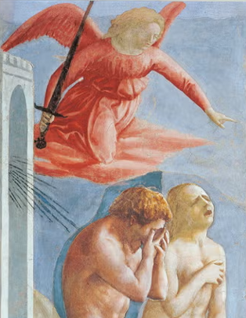
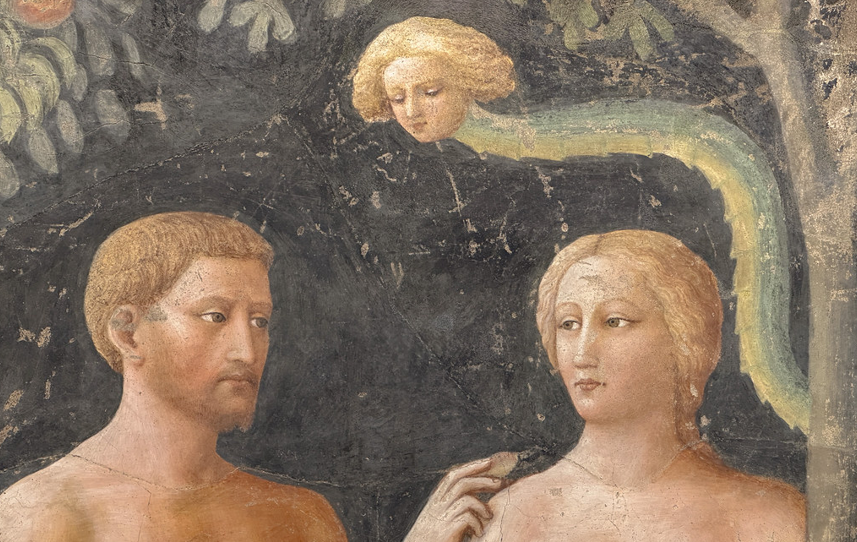

Eduardo Stefani
PPGI, Universidade Nove de Julho
eduardo_stefani@outlook.com
Publicado: 11 Março 2026
Uma jornada tardia pela cultura italiana e pela arte sacra despertou reflexões sobre a perda da inocência e os pontos de não retorno que transformam a vida. A partir dos afrescos de Masaccio e Masolino, o texto conecta descobertas pessoais às grandes rupturas tecnológicas, especialmente à inteligência artificial, vista como a nova serpente que encanta, fascina e exige responsabilidade ética.
Houve uma fase recente em minha vida em que tive muito tempo livre e banda cerebral disponível para explorar assuntos diversos, entre eles, o de resgatar o mundo italiano e, eventualmente, as minhas origens remotas. Aquele tipo de curiosidade juvenil que proporciona descobertas tardias, ainda assim relevantes. Essa fase reuniu a música, a culinária, os vinhos, alguns quilos a mais, o idioma, a cultura em geral, as viagens e, finalmente, um caminho que me fascinou: a arte sacra.
Com essa exploração da cultura, acabei por realizar alguns cursos de arte, que, no limite do interesse, me levaram a viagens dedicadas a visitar os afrescos e quadros que estudei com espanto e fascinação. Veja, enfatizo aqui as descobertas tardias que mencionei, pois esse interesse por artes, especialmente pela sacra, não ocupava meu tempo mental.
Em uma das aulas, tomei conhecimento de um afresco belíssimo de Masaccio, intitulado “La Cacciata dei progenitori dall’Eden”, que retrata o desespero e a perplexidade de Adão e Eva após cometerem o pecado original e serem expulsos do paraíso. Trata-se de uma pintura que apresenta a mistura de arrependimento e perda de inocência após serem seduzidos pela serpente. No papel, aquela imagem me encantou; quando tive a oportunidade de vê-la na Capela Brancacci, na Igreja de Santa Maria del Carmine, em Florença, me aterrorizou e ficou em minha cabeça por anos. Fitava aquela imagem por horas. Compartilhei, por alguns momentos, o desespero daqueles dois que perderam a inocência quase instantaneamente.

Deixe-me organizar as ideias para evitar transmitir o terror. Desejo esclarecer que não acordei hoje com vocações eclesiásticas nem com intenções de restaurar a Santa Inquisição aqui nos trópicos, até porque o calor desvirtuaria a tenacidade da intenção, mas sim de compartilhar a minha compreensão tardia dessa serpente sedutora, que, em verdade, retrata a perda da inocência, a perda do caminho de retorno, o momento em que nunca mais se é o mesmo. Isso pode ocorrer de várias formas: ler um livro, viajar, começar a beber, ter o primeiro beijo, casar, ter um filho, começar a trabalhar, experimentar um prato fantástico e até mesmo fazer os exames de saúde que surgem depois dos 40. Trata-se de nunca mais ser o mesmo, para bem ou para mal.
É a diferença entre segundos e minutos. O que sou e o que posso ser. O que sou com a minha inocência e o que eu seria sem ela, ou mesmo com a incorporação de um novo conhecimento. O que faço agora e o que farei, o que penso agora e o que pensarei. O sabor de estar diante de uma tentação, de querer evitá-la, mas, ao mesmo tempo, de uma curiosidade aterradora. É sentir a beleza e a intensidade da vida, a sensação de que, depois de um ato, não se tem mais o ponto de retorno. Essa indecisão, essa tentação, são retratadas por Masolino no afresco "Tentazione di Adamo ed Eva", na mesma capela. Esses dois gênios foram capazes de concretizar uma ideia e proporcionar uma compreensão do que significa o pecado original: não se trata de algo certo ou errado, mas de um avanço e de não poder mais voltar. Uma forma lúdica de explicar algo tão sensível a uma humanidade que tem grande dificuldade em compreender-se.

Agora que mencionei humanidade, vale exemplificar esses momentos de tentação e de perda do ponto de retorno. Eu gosto de mencionar as grandes revoluções tecnológicas, como a rendição à tentação. O que aconteceu depois da primeira pedrada, da primeira facada, do primeiro tiro, da primeira lâmpada acesa, da primeira transmissão de rádio, da primeira chamada telefônica, da primeira partida em um automóvel, da bomba atômica, do primeiro boot em um computador, do primeiro drone e, finalmente, do primeiro prompt de inteligência artificial? Devo ter sido injusto e negligenciado alguma outra tentação, como a dos eletrodomésticos, por exemplo, mas o ponto aqui é observar que todas elas foram cercadas de otimismo e ceticismo; porém, o sentimento mais marcante foi o de tentação e de realização pela primeira vez. Imagine a sensação de quem segurou uma pedra pela primeira vez e a atirou contra um inimigo.
Ah, a inteligência artificial. Ela é a tentação; o prompt com o cursor piscando é a serpente que nos chama sedutoramente; e, feita a primeira pergunta, pronto, tudo mudou; a resposta encanta, fascina e aterroriza. Passa-se a produzir tudo rapidamente e a deixar de realizar aquelas tarefas frustrantes e repetitivas. Não é bom nem ruim, mas tudo muda; é o efeito da primeira pedrada. O ceticismo é tomado pela militância e defesa dos algoritmos; o receio é tomado por pura audacia; e aquela diligência em fazer tudo organicamente é tomada pela redenção de ter tudo pronto rapidamente, feito por uma entidade que se torna uma amiga incansável, porém que não guarda segredos e que não tem pudor em inventar coisas e violar regras para formular uma resposta.
Aquele afresco de Masolino poderia ser refeito para materializar a tentação moderna. No lugar de Adão e Eva, seriam executivos e estudantes; a serpente, um prompt; e a resposta, a maçã. Ela é consumida, e o afresco de Masaccio é refeito com a imagem desses executivos e estudantes, com a expressão de terror, por nunca mais poderem voltar atrás, por terem descoberto algo que os fez perder o ponto de retorno. A perplexidade ao se dar conta de que será preciso um uso responsável e ético, que preserve os valores humanos, que não viole regras, que respeite a propriedade intelectual e que esteja a salvo de vieses tão nocivos. Que se trata de um fenômeno que requer regulação e governança. A surpresa de que a complexidade das coisas não se resume a um prompt que fornece respostas instantâneas.